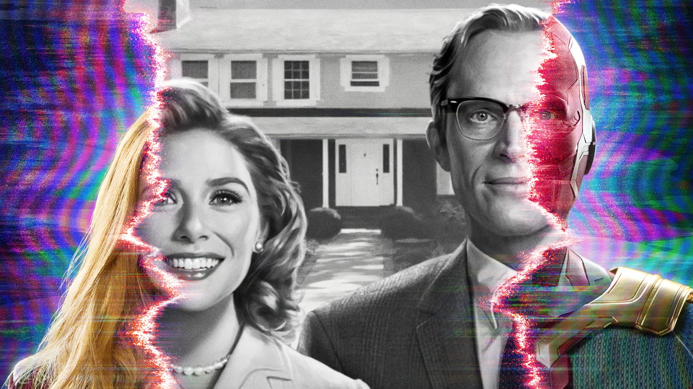

Elizabeth Olsen
Wanda Maximoff / Scarlet Witch
Después de los eventos de Avengers: Endgame, Wanda Maximoff vive junto con Vision en un tranquilo suburbio. Sin embargo, la realidad no es lo que parece, ambos están atrapados en un mundo que cambia de estilo televisivo década tras década. Mientras Wanda crea esta ilusión para enfrentar su dolor, fuerzas externas intentan descubrir qué ocurre realmente en el misterioso pueblo de Westview.

Wanda Maximoff / Scarlet Witch
Vision
Agnes / Agatha Harkness
Monica Rambeau
Jimmy Woo
Dorothy "Dottie" / Darcy Lewis
| Número episodio | Título | Director | Fecha de estreno |
|---|---|---|---|
| 1 | "Filmada con público en vivo" | Matt Shakman | 15 de enero de 2021 |
| 2 | "No Cambie de Canal" | Matt Shakman | 15 de enero de 2021 |
| 3 | "Ahora en colores" | Matt Shakman | 22 de enero de 2021 |
| 4 | "Interrumpimos Este Programa" | Matt Shakman | 29 de enero de 2021 |
| 5 | "En un episodio muy especial..." | Matt Shakman | 5 de febrero de 2021 |
| 6 | "¡Espectacular estreno de Halloween!" | Matt Shakman | 12 de febrero de 2021 |
| 7 | "Abajo la cuarta pared" | Matt Shakman | 19 de febrero de 2021 |
| 8 | "En el episodio anterior..." | Matt Shakman | 26 de febrero de 2021 |
| 9 | "El final de la serie" | Matt Shakman | 5 de marzo de 2021 |